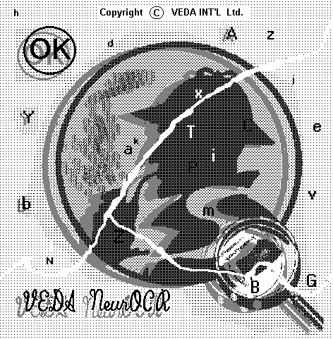

- (Release: Nov. 2007 / Last update: May 2017)
VEDA NeurOCR - V.3.0
- for Windows / 32-bit

[ Free DEMO download available! ]
[ VEDA main page ]
ABOUT VEDA NeurOCR 3.0
The VEDA NeurOCR software is currently
using a not-Neural but somehow alike (Artificial Neural
Networks - ANN - inspired) OCR /
ICR engine. It was designed and developed
to become a useful tool for those who have a large amount of printed text to
feed their computers with, and want to do it in a real automatic way.
VEDA NeurOCR is a professional product, which is the result of hundreds
and thousands of theoretical and practical research, programming and testing
hours. It was developed starting from an original approach in the Neural-like
Models and Classifiers field. Version 3.0 doesn't only
represent a 16 to 32-bit translation of the former 2.0 one, but also comes as
an almost new product, with lots of changes and improvements, both at the
architecture, algorithms and (knowledge) data structures levels, and also at
its user's interface "look and feel" and ergonomy ones.
a) INPUT:
-
When using VEDA NeurOCR, we usually assume that you
previously scanned the original document(s) you have to "feed" the computer with, and have
saved it (them) as image file(s). The input image file formats accepted by VEDA NeurOCR
are: black/white, pixel per bit,
BMP, PCX
or TIFF - either compressed or uncompressed.
Any scanner accompanying acquisition software has at least one of the above
mentioned image file formats among its image saving options. A scanning resolution
of 300 dpi. (400 dpi. for texts written
with font size less than 8 points) is recommended (100%
scaled).
-
A TWAIN acquisition interface to
control devices (i.e. a scanner) designed
and made in compliance with the TWAIN standard, is also provided
by VEDA NeurOCR V.3.0., so that document images can also be directly acquired
while using the program, "online". Scanned images can be stored (and will then be used) as
black/white, pixel/bit, PCX files.
-
The original (scanned) image can be rotated by
90, 180 and 270 degrees, and/or "negativated" (reversed b/w <-> w/b)
from the program, if necessary.
b) OUTPUT:
VEDA NeurOCR uses its "knowledge" and other capabilities
to "read" the text contained in the input BMP, PCX, or TIFF (either uncompressed, or
compressed) image file(s), and will save it into correspondent ASCII text file(s).
-
VEDA NeurOCR normally provides formatted
ASCII text output (the recognition result follows, as much as possible,
the original document layout - improved module
).
-
The output text can also be obtained as "decolumnized"
ASCII (columns and/or designated blocks of text are converted
to successive paragraphs).
-
A general DTP/WP(*) appropriate paragraph oriented text format
(without <CR><LF> at the end of each line, but only at the
end of paragraphs), is also available as an export option for the recognized
text.
[(*) DTP = Desktop Publishing, WP = Word Processor]
c) MAIN FEATURES:
-
VEDA NeurOCR comes with some default
(already built) font oriented knowledge bases (new
format). These ones were trained on printed samples, written with the
main families of fonts: Courier, Dutch (Times Roman),
Swiss (Arial, Helvetica), 9 pins matrix printer and
mechanical typewriter.
-
It is also trainable. VEDA NeurOCR
can learn and recognize any other new character and
font (typeface, style, size) you want (new
algorithms and data structures, improved modules). The training is
interactive, fast and easy. It is always performed off-line, so, the
recognition process can really be a full automatic one. Please note that, even
if, in the same knowledge base, characters written with more than only one font
may be learned without any problem, it is still recommended to keep each
knowledge base oriented on only one font typeface and to use an appropriate
name for it.
-
VEDA NeurOCR is able to "read" multi-font
written documents (if the knowledge bases for all these fonts are available).
-
VEDA NeurOCR can even be considered as an "omnifont"
-like OCR system. This means that, with a multi-font configuration setup, and
with the default and the most (maximum 30 at once!) of the user trained and
customized knowledge bases selected, VEDA NeurOCR can directly recognize
almost any new source document, no special new settings and/or training being
needed.
-
It can be also considered "multi-lingual",
because it is able to "read" text from documents printed in a lot of languages
(mainly based on Latin-like alphabet). In fact, it can learn any
graphical sign for which an ASCII correspondent exists. The learning process
is natural (based on examples), fast and easy.
-
VEDA NeurOCR can work in "batch processing"
mode, using many different input image files in each batch session
(improved module).
-
VEDA NeurOCR automatically detects
and skips graphics (tables, boxes, columns separators, pictures
or other lines and graphical elements) in the image source and doesn't
reproduce them in the recognized text file. A lines
filtering option is also provided, allowing to physically erase
(long) lines in an image when this can improve the segmentation and
recognition (new module).
-
VEDA NeurOCR V.3.0 also allows
off-line interactive definition/selection of some regions/zones (of
the current source image), that will be further used for recognition or/and
training, if desired (improved module).
-
It can obtain good recognition ratios even on poor
quality input documents (obtained from 9 pins matrix printers
or old mechanical typewriters).
- VEDA NeurOCR V.3.0 solves in a new more
efficient and elegant approach the segmentation of physically
connected ("in touch") characters, mainly encountered for Dutch- and
Swiss-like fonts. It also splits, in almost all the cases, the "in
touch" successive rows.
-
It contains an integrated Text Editor
(improved module) with which the recognized text
can be analyzed, edited (corrected) and/or printed. It can also be exported
from the Text Editor, in a general Word Processor paragraph oriented text
format.
-
VEDA NeurOCR provides a brief (baloon type)
"Command Help" associated with the buttons
that starts its main functions. It also has an integrated "Help
Viewer" (improved module) through which the
"User's Manual" text can be displayed at any time.
d) PERFORMANCE:
- The recognition ratio
can reach up to 99.9 - 100 %. Its normal average
value is about 98.5 - 99.5 %.
- The recognition speed
can reach thousands cps. (characters/second). It is strongly dependent on:
- the computer's CPU type and frequency,
- the complexity of the source image (scanned document),
- the number and the size of the used knowledge base(s).
e) HARDWARE REQUIREMENTS:
VEDA NeurOCR can be run on any PC.
However, it is recommended to use a configuration with at least Pentium II/200MHz,
and 128 MB RAM on board. Minimum 10.0 MB free hard
disk space must be available. VEDA NeurOCR's speed performance directly (and
strongly) depends on the CPU type and frequency; e.g. on a Pentium IV/1,5GHz PC,
substantial (400 - 500%) speed improvement can be observed compared with a
Pentium II/200MHz.
For document image acquisition, at least a 300 - 400
dpi, line-art mode (black/white), A4, TWAIN compliant, flatbed scanner
is recommended (and, usually, sufficient).
A FREE evaluation
(DEMO) copy of VEDA NeurOCR 3.0 (the
latest version for Windows / 32-bit, also running on 64-bit!) can be downloaded from
here.
In order to get the VEDA NeurOCR DEMO on your
Windows based computer, you have to:
1. - create a new temporary directory/folder on your computer
(i.e. "C:\VEDA_TMP");
2. - download the "vedaocr3.zip"
archive and extract its contents (VEDA NeurOCR's installation kit) in this directory/folder;
3. - run the "install.bat"
program (new) from the same directory/folder, and follow the displayed
instructions for installing the VEDA NeurOCR 3.0 DEMO application with all its related files;
4. - if you wish, make and keep safely a copy of the downloaded
"vedaocr3.zip"
archive file, then delete it, and all the extracted installation kit files,
and(/or directly) their respective temporary folder, as you consider.
Success !!!
[ Download free DEMO now ! ]
We shall always appreciate comments, suggestions or/and reports about possible
bugs, errors, or other anomalies you may encounter while using VEDA NeurOCR V.3.0.
[ Top of page ]
CONTACT:
Mr. Mihnea VREJOIU